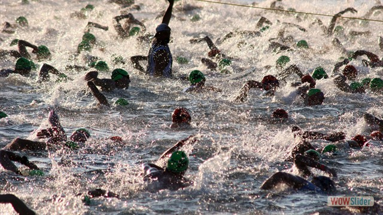
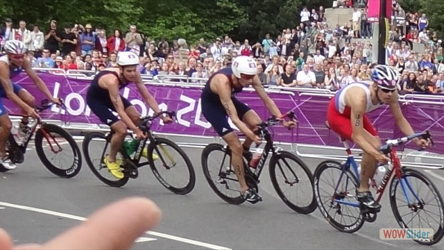
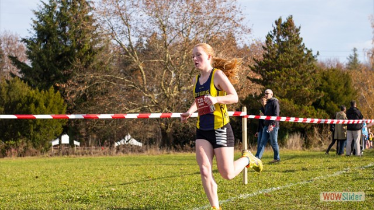
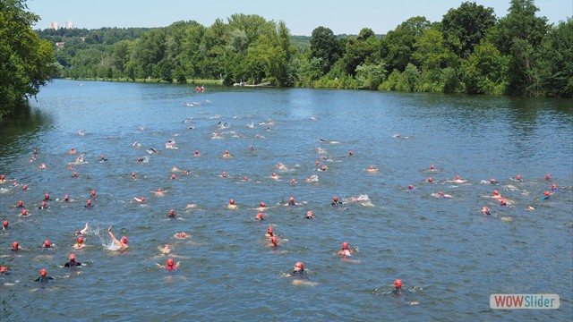
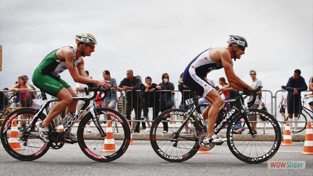
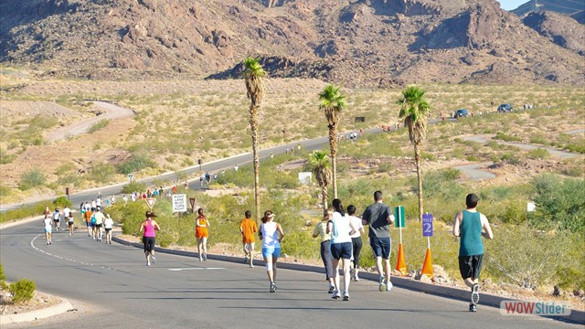
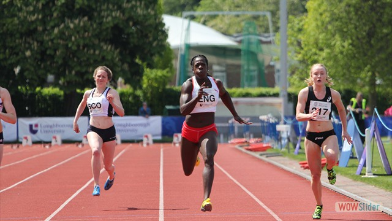
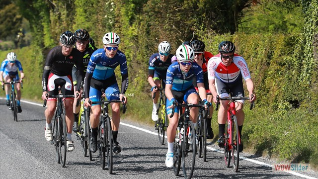
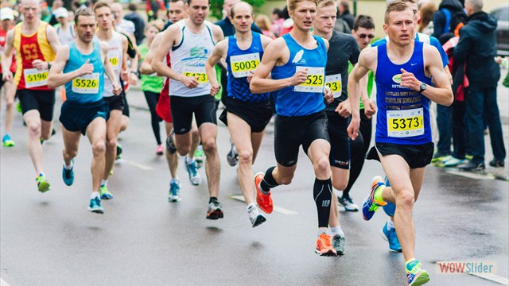
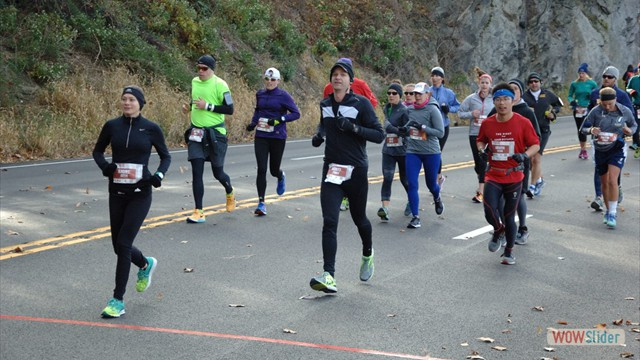

Starting Times
Saturday
- Long Course 7:00 AM
- Olympic 7:30 AM
- 10K 7:15 AM
- Half Marathon 7:15 AM
Sunday
- Sprint 8:00 AM
- Try-a-Tri 8:20 AM
- Splash n Dash 12:00 PM
WATER TEMPERATURE is expected to be between 62 – 66 degrees. The temperature will be taken on Friday and the morning of the race. Wetsuits are recommended.
Participants will make two counter-clockwise loops. Large buoys will mark the turn points. Kayakers will be positioned on the water to support the swimmers. Medical support will be present on the beach.
A scenic point-to-point course that travels over gently rolling hills prior to three hard climbs. The bike course will be marked with large directional signage and there will be course marshals at key intersections to help direct you.
A mostly flat loop course on widely paved bike paths that traverse through and around this beautiful and scenic destination resort (two hills total with a minimal elevation gain).
Participants will make two counter-clockwise loops. Large buoys will mark the turn points. Kayakers will be positioned on the water to support the swimmers. Medical support will be present on the beach.
A scenic point-to-point course that travels over gently rolling hills. The bike course will be marked with large directional signage and course marshals will be present at key intersections.
A mostly flat loop course on widely paved bike paths that traverse through and around this beautiful and scenic destination resort (one hill total with a minimal elevation gain).
Course will offer a 1-loop 1/2 mile swim, the exact same 28 mile Bike Course as the Olympic distance and a 5km run.
This novice race is designed for the first time triathlete, those new to the sport, our Junior Triathletes. The swim is a shorter, more manageable 1/4 mile distance, (instead of the standard 1/2-mile Sprint distance swim), 10 mile bike ride (vs 12 miles and it's a 2 loop course making it very spectator friendly!) and a flat 2 mile run (vs 3 mile sprint course).
Half-Marathon event starts and finishes in the Athletes Village to the cheers of the enthusiastic crowd. Once finished, runners can enjoy the finish line festivities, including the Sports & Fitness Expo and live entertainment. Post-race refreshments will be provided and the Awards Ceremony for the Half-Marathon will begin once the results have been certified
The 10K event starts and finishes in the Athletes Village. The paths are approximately 6 ft wide, perfectly paved and wind around through the forest. Each course has only two small hills with a minimal elevation gain to navigate and a fast downhill to flat finish to the roaring cheers of the crowd.
